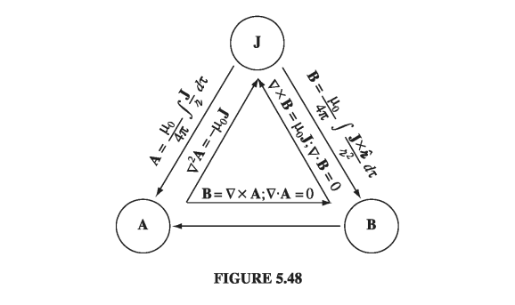
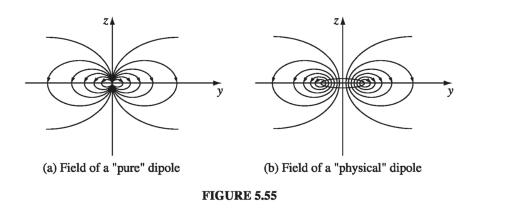
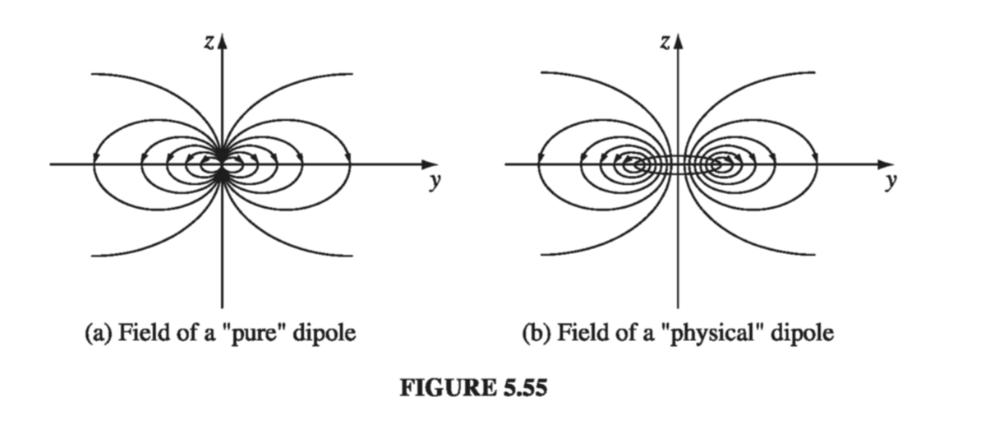

5.4: Magnetic Vector Potential#
5.4.1: The Vector Potential#
Just as \( \nabla \times \vec{E} = 0 \) permitted us to introduce a scalar potential (V) in electrostatics,
so \( \nabla \cdot \vec{B} = 0 \) invites the introduction of a vector potential A in magnetostatics
We were allowed to define these potentials based on our extended proof of the Helmholtz theorem (back in Section 1.6). The potential formulation automatically takes care of \( \nabla \cdot \vec{B} = 0 \) since the divergence of a curl is always zero; there remains Ampere’s law:
Now, the electric potential had a built-in ambiguity: you can add to V any function whose gradient is zero (which is to say, a constant), without altering the physical quantity E. Likewise, you can add to A any function whose curl vanishes (which is to say, the gradient of any scalar), with no effect on B. We can exploit this freedom to eliminate the divergence of A:
To prove that this is always possible, suppose that our original potential \( \vec{A_0} \) is not divergenceless. If we add to it the gradient of \( \lambda \) \( (\vec{A} = \vec{A}_0 + \nabla \lambda) \), the new divergence is
We can accommodate Eq. 5.63, then, if a function \( \lambda \) can be found that satisfies
But this is mathematically identical to Poisson’s equation
with \( \nabla \cdot \vec{A}_0 \) in place of \( \rho / \epsilon_0 \) as the “source.” And we know how to solve Poisson’s equation - that’s what electrostatics is all about. In particular, if \( \rho \) goes to infinity, the solution is Eq. 2.29:
and by the same token, if \( \nabla \cdot \vec{A}_0 \) goes to zero at infinity, then
If \( \nabla \cdot \vec{A}_0 \) does not go to zero at infinity, then we’ll have to use other means to discover the appropriate \( \lambda \), just as we get the electric potential by other means when the charge distribution extends to infinity. But the essential point remains: It is always possible to make the vector potential divergenceless. To put it the other way round,: the definition \( \vec{B} = \nabla \times \vec{A} \) specifies the curl of A, but it doesn’t say anything about the divergence - we are at liberty to pick that as we see fit, and zero is ordinarily the simplest choice.
With this condition on A, Ampere’s law becomes
This again is nothing but Poisson’s equation, or rather it is three of them, one for each Cartesian coordinate. In Cartesian coordinates, \( \nabla ^2 \vec{A} = (\nabla ^2 A_x) \hat{x} + (\nabla ^2 A_y) \hat{y} + (\nabla ^2 A_z) \hat{z} \), so 5.64 reduces to \( \nabla ^2 A_x = - \mu_0 J_x \), \( \nabla ^2 A_y = - \mu_0 J_y \), and \( \nabla ^2 A_z = - \mu_0 J_z \). In curvilinear coordinates, the unit vectors themselves are functions of position, and must be differentiated, so it is not the case, for example, that \( \nabla ^2 A_r = - \mu_0 J_r \). Remember that even if you plan to evaluate integrals such as 5.65 using curvilinear coordinates, you must first express \( \vec{J} \) in terms of its Cartesian components. Assuming J goes to zero at infinity, we can read off the solution
For line and surface currents,
(If the current does not go to zero at infinity, we have to find other ways to get A; some of these are explored in Exercise 5.12 and in the problems at the end of the section.)
It must be said that A is not as useful as V. For one thing, it’s still a vector, and although Eqs. 5.65 and 5.66 are somewhat easier to work with than the Biot-Savart law, you still have to fuss with components. It would be nice if we could get away with a scalar potential
but this is incompatible with Ampere’s law, since the curl of a gradient is always zero. (A magnetostatic scalar potential can be used, if you stick scrupulously to simply-connected, current-free regions, but as a theoretical tool, it is of limited interest. See problem 5.29.) Moreover, since magnetic forces do no work, A does not admit a simple physical interpretation in terms of potential energy per unit charge. (In some contexts it can be interpreted as the momentum per unit charge.) Nevertheless, the vector potential has substantial theoretical importance, as we shall see in chapter 10.
Example 5.11#
A spherical shell of radius R, carrying a uniform surface charge \( \sigma \), is set spinning at angular velocity \( \omega \). Find the vector potential it produces at r (Fig 5.45).

While it might seem natural to set the polar axis along \( \omega \), in fact the integration is easier if we let r lie on the z axis, so that \( \omega \) is tilted at an angle \( \psi \). We may as well orient the x axis so that \( \omega \) lies in the xz plane, as shown in Fig 5.46. According to Eq. 5.66,
where \( \vec{K} = \sigma \vec{v} \), \( \Delta r = \sqrt{R^2 + r^2 - 2 R r \cos \theta'} \), and \( \mathrm{d} a' = R^2 \sin \theta' \mathrm{d} \theta ' \mathrm{d} \phi' \ \). Now the velocity of a point r’ in a rotating rigid body is \( \vec{\omega} \times \vec{r'} \); in this case,
Notice that each of these terms, save one, involves either \( \sin \phi' \) or \( \cos \phi' \). Since
such terms do not contribute to the integral. There remains
Letting \( u \equiv \cos \theta' \), the integral becomes
If the point r lies inside the sphere, then \( R > r \) and this expression reduces to \( (2r / 3R^2) \); if r lies outside the sphere, so that \( R < r \), it reduces to \( (2R / 3r^2) \). Noting that \( (\vec{\omega} \times \vec{r}) = - \omega r \sin \psi \hat{y} \), we have finally
Having evaluated the integral, I revert to the “natural” coordinates of Fig. 5.45, in which \( \vec{\omega} \) coincides with the z axis and the point r is at \( (r, \theta, \phi) \):
Curiously, the field inside this spherical shell is uniform:
Example 5.12#
Find the vector potential of an infinite solenoid with n turns per unit length, radius R, and current I
This time we cannot use Eq 5.66, since the current itself extends to infinity. But there is a cute method that does the job. Notice that
where \( \Phi \) is the flux of B through the loop in question. This is reminiscent of Ampere’s law in integral form (Eq. 5.57)
In fact, it’s the same equation, with \( \vec{B} \rightarrow \vec{A} \) and \( \mu_0 I_{enc} \rightarrow \Phi \). If symmetry permits, we can determine A from \( \Phi \) in the same way we got B from \( I_{enc} \), in section 5.3.3. The present problem (with a uniform longitudinal magnetic field \( \mu_0 n I \) inside the solenoid and no field outside) is analogous to the Ampere’s law problem of a fat wire carrying a uniformly distributed current. The vector potential is “circumferential” (it mimics the magnetic field in the analog); using a circular “Amperian loop” at radius s inside the solenoid, we have
so
For an Amperian loop outside the solenoid, the flux is
since the field only extends out to R. Thus
To check our work, we can make sure that \( \nabla \times \vec{A} = \vec{B} \) and \( \nabla \cdot \vec{A} = 0 \). Inside the solenoid,
Outside the solenoid,
which is just the answer we got in section 5.3 by Biot-Savart.
Typically, the direction of A mimics the direction of the current. For instance, both were azimuthal in Exs. 5.11 and 5.12. Indeed, if all the current flows in one direction, then Eq. 5.65 suggests that A must point that way too. Thus the potential of a finite segment of straight wire (Prob. 5.23) is in the direction of the current. Of course, if the current extends to infinity you can’t use Eq. 5.65 in the first place (see Probs. 5.26 and 5.27). Moreover, you can always add an arbitrary constant vector to A - this is analogous to changing the reference point for V, and it won’t affect the divergence or curl of A, which is all that matters (in Eq. 5.65 we have chosen the constant so that A goes to zero at infinity). In principle you could even use a vector potential that is not divergenceless, in which case all bets are off. Despite these caveats, the essential point remains: Ordinarily the direction of A will match the direction of the current.
5.4.2: Boundary Conditions#
In Chapter 2, we had a triangular diagram to summarize the relations among the three fundamental quantities in electrostatics: the charge density \( \rho \), the electric field E, and the potential V. A similar figure can be constructed for magnetostatics (Fig 5.48), relating the current density J, the field B, and the potential A. There is one “missing link” in the diagram: the equation for A in terms of B. It’s unlikely you would ever need such a formula, but in case you are interested, see Probs. 5.52 and 5.53 
Just as the electric field suffers a discontinuity at a surface charge, so the magnetic field is discontinuous at a surface current. Only this time it is the tangential component that changes. For if we apply Eq. 5.50 in integral form
to a wafer-thin pillbox straddling the surface (Fig 5.49), we get
As for the tangential components, an Amperian loop running perpendicular to the current (Fig 5.50) yields
or

 Thus the component of B that is parallel to the surface but perpendicular to the current is discontinuous in the amount \( \mu_0 L \). A similar Amperian loop running parallel to the current reveals that the parallel component is continuous. These results can be summarized in a single formula
Thus the component of B that is parallel to the surface but perpendicular to the current is discontinuous in the amount \( \mu_0 L \). A similar Amperian loop running parallel to the current reveals that the parallel component is continuous. These results can be summarized in a single formula
where \( \hat{n} \) is perpendicular to the surface, pointing “upward.”
Like the scalar potential in electrostatics, the vector potential is continuous across any boundary:
for \( \nabla \cdot \vec{A} = 0 \) guarantees that the normal component is continuous, and \( \nabla \times \vec{A} = \vec{B} \) in the form
means that the tangential components are continuous (the flux through an Amperian loop of vanishing thickness is zero). But the derivative of A inherits the discontinuity of B:
5.4.3: Multipole Expansion of the Vector Potential#
If you want an approximate formula for the vector potential of a localized current distribution, valid at distant points, a multipole expansion is in order. Remember: the idea of a multipole expansion is to write the potential in the form of a power series in \( 1/r \), where r is the distance to the point in question (Fig 5.51); if r is sufficiently large, the series will be dominated by the lowest nonvanishing contribution, and the higher terms can be ignored. As we found in Section 3.4.1,
where \( \alpha \) is the angle between r and r’. Accordingly, the vector potential of a current loop can be written
or, more explicitly,
As with the multipole expansion of V, we call the first term (which goes like \( 1/r \)) the monopole term, the second (which goes like \( 1/r^2 \)) dipole, the third quadrupole, and so on.

Now, the magnetic monopole term is always zero, for the integral is just the total vector displacement around a closed loop
This reflects the fact that there are no magnetic monopoles in nature (an assumption contained in Maxwell’s equation \( \nabla \cdot \vec{B} = 0 \), on which the entire theory of vector potential is predicated).
In the absence of any monopole contribution, the dominant term is the dipole (except in the rare case where it, too, vanishes):
This integral can be rewritten in a more illuminating way if we invoke Eq. 1.108 with \( \vec{c} = \hat{r} \):
Then
where we define the magnetic dipole moment m:
Here a is the “vector area” of the loop (Problem 1.62); if the loop is flat, a is the ordinary area enclosed, with the direction assigned by the usual right-hand rule (fingers in the direction of the current).
Example 5.13#
Find the magnetic dipole moment of the ‘bookend-shaped’ loop shown in Fig 5.52. All sides have length w, and it carries a current I.

This wire could be considered the superposition of two plane square loops (Fig 5.53). The “extra” sides (AB) cancel when the two are put together, since the currents flow in opposite directions. The net magnetic dipole moment is
Its magnitude is \( \sqrt{2} I w^2 \) and it points along the \( 45^{\circ} \) line \( z = y \)

It is clear from Eq. 5.86 that the magnetic dipole moment is independent of the choice of origin. You may remember that the electric dipole moment is independent of the origin only when the total charge vanishes (Sect. 3.4.3). Since the magnetic monopole moment is always zero, it is not really surprising that the magnetic dipole moment is always independent of origin.
Although the dipole term dominates the multipole expansion (unless \( \vec{m} = 0 \)) and thus offers a good approximation to the true potential, it is not ordinarily the exact potential; there will be quadrupole, octopole, and higher contributions. You might ask, is it possible to devise a current distribution whose potential is “pure” dipole - for which Eq. 5.85 is exact? Well, yes and no: like the electrical analog, it can be done, but the model is a bit contrived. To begin with, you must take an infinitesimally small loop at the origin, but then, in order to keep the dipole moment finite, you have to crank the current up to infinity, with the product \( m = I a \) held fixed. In practice, the dipole potential is a suitable approximation whenever the distance \( r \) greatly exceeds the size of the loop.
The magnetic field of a (perfect) dipole is easiest to calculate if we put \( \vec{m} \) at the origin and let it point in the z-direction (Fig 5.54). According to Eq. 5.85, the potential at point \( (r, \theta, \phi) \) is
and hence
 

Unsurprisingly, this is identical in structure to the field of an electric dipole (Eq. 3.103)! (Up close, however, the field of a physical magnetic dipole - a small current loop - looks quite different from the field of a physical electric dipole - plus and minus charges a short distance apart. Compare Fig 5.55 with Fig 3.37.)